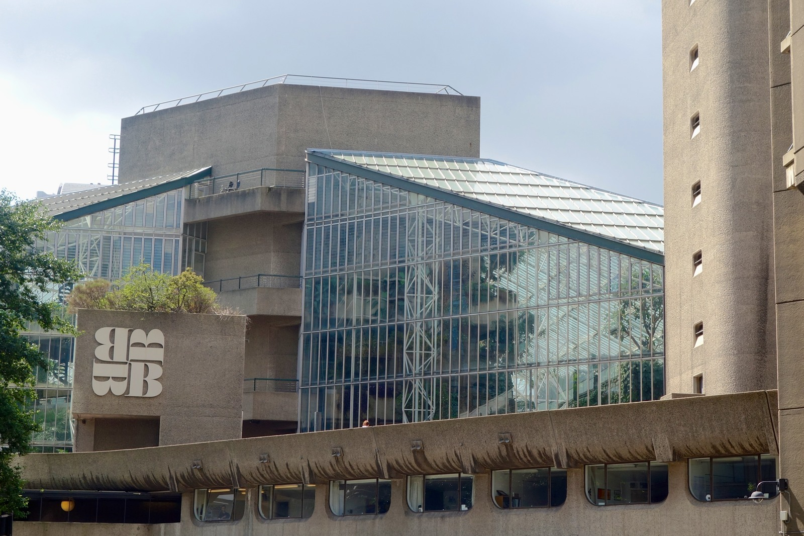

外から、形を見てみよう。
バービカン芸術センターの外観の一部。大きなコンクリートの面と、細かい枠で支えられたガラスの面を比べられます。2014年撮影。
作品・制作の例3件を紹介しています。実作品画像1点、参照・関連画像0点。画像の収集は継続中です。
建築の潮流。初期のニュー・ブルータリズムと後の広がりを区別
Brutalism
建物を支える骨組みや、材料の表面を隠さず見せる。
ブルータリズムは、そうしたつくり方を建物の強い表情につなげた建築の潮流です。
大きなコンクリートの建物だけ、という意味ではありません。
実作品を見る

画像を表示できませんでした。下の出典ページで確認できます。
チェンバリン、パウエル＆ボン（設計） / 1962–1982（複合施設の建設。芸術センターは1982年開館）
バービカン芸術センターの外観の一部。大きなコンクリートの面と、細かい枠で支えられたガラスの面を比べられます。2014年撮影。
バービカン / Photo: Nachomaans（画像メタデータ：Stéphane Mégécaze）, CC BY-SA 4.0.
出典で作品・資料を見る ↗CC BY-SA 4.0
原建築と写真の権利は別です。この外観写真の掲載を、図面・内部・家具などの自由利用の許可とは扱いません。
写真：CC BY-SA 4.0。出典・撮影者と画像の変更内容を表示して利用します。
縦横の比率を保って縮小しJPEGで保存。切り抜き・色の変更・描き足しはしていません。
建築外観の利用について、日本・米国などの個別の条件を確認しています。全法域で原建築がパブリックドメインという意味ではありません。
画像の利用条件 ↗学校建築
鉄とガラス、れんがを使い、骨組みを見せた初期の重要作です。ブルータリズムがコンクリートだけの様式ではないことを示します。
作品・資料の出典を見る ↗作品名（出典表記）：Smithdon School（スミスドン校／旧ハンスタントン校）
Alison Smithson、Peter Smithson（アリソン＆ピーター・スミッソン） / 1950–1954（建設） / 学校建築
公共建築
大きく張り出すコンクリートの形が、市庁舎の存在を強く示します。一方、建設のために以前の街が取り壊された歴史もあり、建物の評価と都市の変化を一緒に考える例です。
作品・資料の出典を見る ↗作品名（出典表記）：Boston City Hall（ボストン市庁舎）
Kallmann, McKinnell and Knowles（カルマン、マッキンネル＆ノウルズ） / 1968（完成。米国国立公園局の記録） / 公共建築
集合住宅・文化施設・都市計画
住まいと文化施設、歩く道を大きなまとまりとしてつくりました。コンクリートの表面と、ガラス張りの部分の違いにも注目できます。
作品・資料の出典を見る ↗作品名（出典表記）：Barbican（バービカン）
Chamberlin, Powell and Bon（チェンバリン、パウエル＆ボン） / 1962–1982（複合施設の建設。芸術センターは1982年開館） / 集合住宅・文化施設・都市計画
英国のアリソンとピーター・スミッソンは、材料と構造を率直に見せる建築を考えました。
1955年、批評家（ひひょうか。
作品の意味や良さを考え、伝える人）のレイナー・バンハムが、二人の学校建築を論じています。
1960年代には、コンクリートの表面や大きな量感を生かす作品が広がりました。
名前の似たウェブデザインと、建築史上の運動は分けて扱います。
コンクリートの灰色だけでなく、れんが、鉄、ガラスなどの材料の色を見ます。塗装や改修による変化にも注意します。
建築に共通する書体はありません。案内表示の文字と、建物自体の設計を混同しないようにします。
柱や梁（はり。横向きに渡して重さを支える部材）、階段、設備が、どう見える位置にあるかを確かめます。
大きな建物のかたまりと、人が歩く道や集まる広場を一緒に見ましょう。迫力だけでなく、使う人の動きも大切です。
ミッドセンチュリー・モダンと時代が重なりますが、同じ意味ではありません。また、コンクリートが見える建物をすべてブルータリズムとするのも早すぎます。設計者の考えと、当時の資料を合わせて確かめます。
古い建物を残すときには、材料の表情と、使う人の快適さを両方考える必要があります。スミスドン校のように、建築として評価されても、暑さなど使いにくさが指摘された例があります。
英国の初期例と大規模複合施設、米国の公共建築を選びました。世界全体の展開を網羅してはいません。
作品・制作の例3件を紹介しています。実作品画像1点、参照・関連画像0点。画像の収集は継続中です。